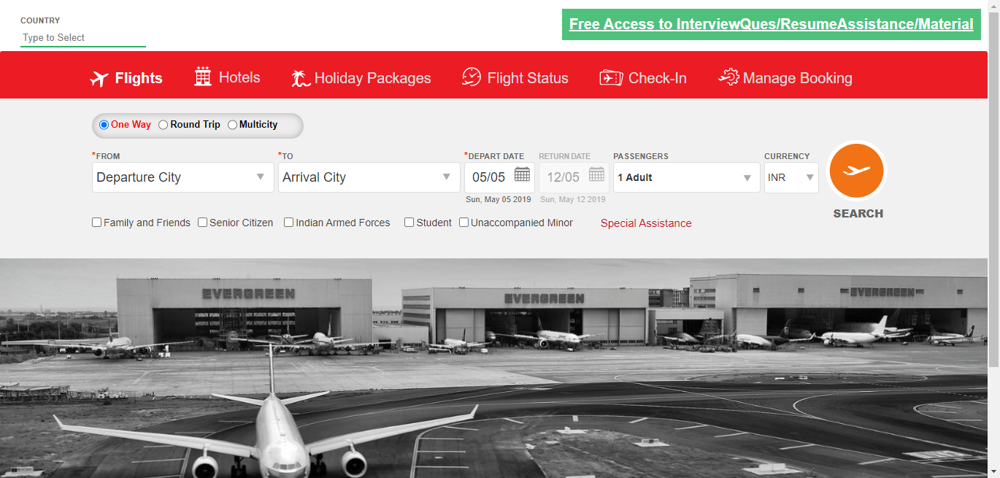
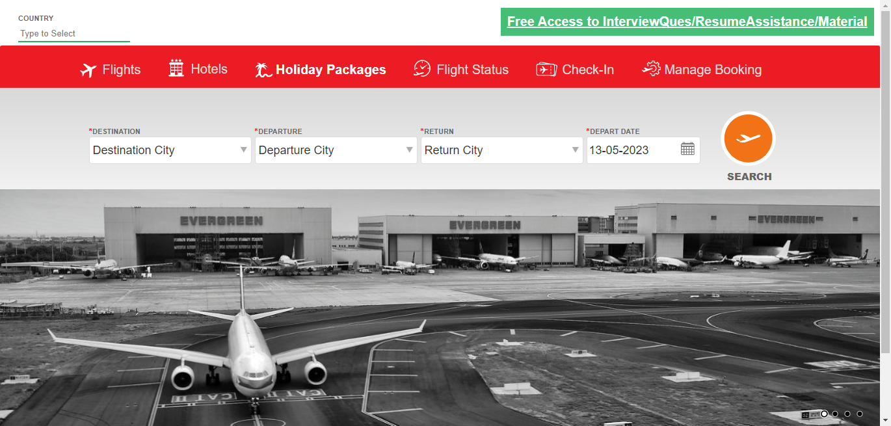
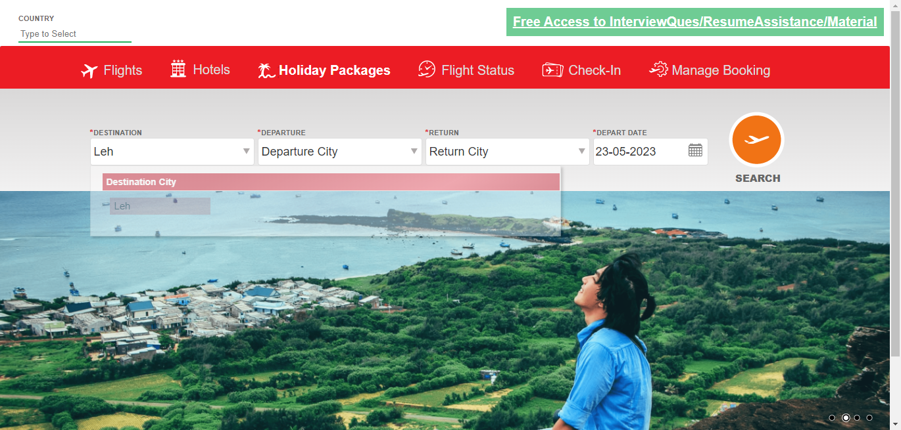
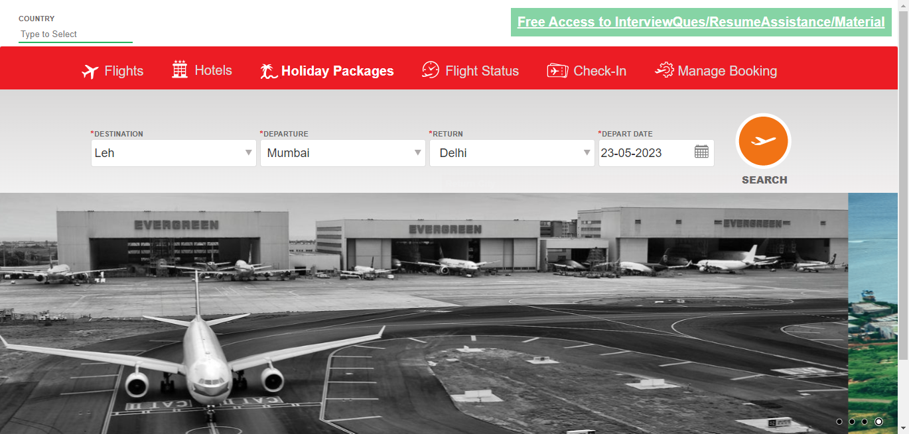

-
Error messages during flight search
6:53:59 PM / 00:00:28:285 Fail
Error messages during flight search
05.13.2023 6:53:59 PM 05.13.2023 6:54:27 PM 00:00:28:285 · #test-id=1FailVerify error message is displayed when more than 9 passengers are selectedFailVerify error message is displayed when more than 9 passengers are selectedGiven User clicks on journeyType option multicitystepDefinitions.Hooks.AddScreenshot(io.cucumber.java.Scenario)imageWhen User enters departure city GOI and arrival city BLRStep skippedAnd User clicks on departDateStep skippedAnd User selects depart date with month June and date 22Step skippedAnd User selects passengers with adults 6 childs 4 then Error message You are allowed a maximum of 9 passengers per booking online. If your party is larger than this, please call our reservation center. should be displayedStep skipped -
Book holiday package
6:54:28 PM / 00:00:32:752 Fail
Book holiday package
05.13.2023 6:54:28 PM 05.13.2023 6:55:00 PM 00:00:32:752 · #test-id=15FailBook holiday packages in destination cityFailBook holiday packages in destination cityGiven User clicks on holidaypackage optionstepDefinitions.Hooks.AddScreenshot(io.cucumber.java.Scenario)imageWhen User clicks on destination option LehstepDefinitions.Hooks.AddScreenshot(io.cucumber.java.Scenario)imageAnd User enters departure city Mumbai and return city DelhistepDefinitions.Hooks.AddScreenshot(io.cucumber.java.Scenario)imageAnd User selects the departure date with month May and date 15stepDefinitions.Hooks.AddScreenshot(io.cucumber.java.Scenario) -
Search flight
6:55:00 PM / 00:00:26:969 Fail
Search flight
05.13.2023 6:55:00 PM 05.13.2023 6:55:27 PM 00:00:26:969 · #test-id=27FailSearch flight with multicity journeytype optionFailSearch flight with multicity journeytype optionGiven User clicks on journeyType option multicitystepDefinitions.Hooks.AddScreenshot(io.cucumber.java.Scenario)When User enters departure city GOI and arrival city BLRStep skippedAnd User clicks on departDateStep skippedAnd User selects depart date with month June and date 22Step skippedAnd User selects passengers with adults 4 childs 2 infants 1Step skippedAnd User selects currency as USDStep skippedAnd User clicks on searchStep skippedThen Available flights for the given search criteria should be displayedStep skippedFailSearch flight with oneway journeytype optionFailSearch flight with oneway journeytype optionGiven User clicks on journeyType option onewaystepDefinitions.Hooks.AddScreenshot(io.cucumber.java.Scenario)When User enters departure city GWL and arrival city PNQStep skippedAnd User selects depart date with month May and date 23Step skippedAnd User selects passengers with adults 5 childs 3 infants 2Step skippedAnd User selects currency as INRStep skippedAnd User clicks on searchStep skippedThen Available flights for the given search criteria should be displayedStep skippedFailSearch flight with roundtrip journeytype optionFailSearch flight with roundtrip journeytype optionGiven User clicks on journeyType option roundtripstepDefinitions.Hooks.AddScreenshot(io.cucumber.java.Scenario)When User enters departure city BOM and arrival city DELStep skippedAnd User selects depart date with month June and date 10Step skippedAnd User clicks on returndate option with month June and date 20Step skippedAnd User selects passengers with adults 6 childs 3 infants 4Step skippedAnd User selects currency as AEDStep skippedAnd User clicks on searchStep skippedThen Available flights for the given search criteria should be displayedStep skipped
-
org.openqa.selenium.NoSuchWindowException
5 tests
org.openqa.selenium.NoSuchWindowException
5 failedStatus Timestamp TestName Fail 18:54:58 PM stepDefinitions.Hooks.AddScreenshot(io.cucumber.java.Scenario) Book holiday package.Book holiday packages in destination city.stepDefinitions.Hooks.AddScreenshot(io.cucumber.java.Scenario)Fail 18:55:09 PM stepDefinitions.Hooks.AddScreenshot(io.cucumber.java.Scenario) Search flight.Search flight with multicity journeytype option.stepDefinitions.Hooks.AddScreenshot(io.cucumber.java.Scenario)Fail 18:55:15 PM Given User clicks on journeyType option oneway Search flight.Search flight with oneway journeytype option.Given User clicks on journeyType option onewayFail 18:55:20 PM stepDefinitions.Hooks.AddScreenshot(io.cucumber.java.Scenario) Search flight.Search flight with oneway journeytype option.stepDefinitions.Hooks.AddScreenshot(io.cucumber.java.Scenario)Fail 18:55:27 PM stepDefinitions.Hooks.AddScreenshot(io.cucumber.java.Scenario) Search flight.Search flight with roundtrip journeytype option.stepDefinitions.Hooks.AddScreenshot(io.cucumber.java.Scenario) -
java.lang.NullPointerException
2 tests
java.lang.NullPointerException
2 failedStatus Timestamp TestName Fail 18:53:59 PM Given User clicks on journeyType option multicity Error messages during flight search.Verify error message is displayed when more than 9 passengers are selected.Given User clicks on journeyType option multicityFail 18:54:58 PM And User selects the departure date with month May and date 15 Book holiday package.Book holiday packages in destination city.And User selects the departure date with month May and date 15 -
org.openqa.selenium.SessionNotCreatedException
1 tests
org.openqa.selenium.SessionNotCreatedException
1 failedStatus Timestamp TestName Fail 18:55:00 PM Given User clicks on journeyType option multicity Search flight.Search flight with multicity journeytype option.Given User clicks on journeyType option multicity -
org.openqa.selenium.NoSuchElementException
1 tests
org.openqa.selenium.NoSuchElementException
1 failedStatus Timestamp TestName Fail 18:55:21 PM Given User clicks on journeyType option roundtrip Search flight.Search flight with roundtrip journeytype option.Given User clicks on journeyType option roundtrip
Started
May 13, 2023 06:53:57 PM
Ended
May 13, 2023 06:55:28 PM
Features Passed
0
Features Failed
3
Features
Scenarios
Steps
Timeline